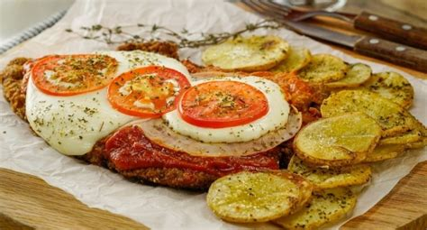

Milanesa a la Napolitana

Ingredientes
- 8 filetes pequeños y delgados de ternera
- 1 taza de pan rallado
- 2 huevos
- 1 cucharada de mostaza
- 3 dientes de ajo
- Perejil picado
- 1 cucharada de queso rallado
- 150g de queso mozzarella
- 150g de jamón cocido
- Una lata de puré de tomate
- Una cebolla
- 2 hojas de Laurel fresco
- Aceite
- sal
- pimienta a gusto
Elaboración de la salsa
- Pique el ajo y la cebolla en cuadritos pequeños
- Lleve una olla al fuego y agréguele aciete. Añádele el ajo y la cebolla y cocinelas hasta que las cebollas estén transaparentes.
- Agrege el puré de tomate, las hojas de Laurel y deje cocinar por 20 minutos.
- Añada sal y pimienta a gusto.
Elaboración de la milanesa a la napolitana
- Batir los huevos y añada la mostaza, 1 diente de ojo machacado, el perejil, el queso rallado, salpimiente a gusto y mezcle bien los ingredientes
- Condimente los filetes con la sal y añádala a la mezcla anterior. Tape con papel plástico y lleve al refrigerador por 45 minutos.
- Una vez transcurrido ese tiempo, retire las milanesas del refrigerador. Y empánelas con el pan rallado una por una, tratando de que recubra bien ambos lados.
- En una sartén agregue 1 taza de aceite y cuando este caliente añádales las milanesas. Cuando estén doradas retire y reserve.
- Añadimos encima de las milanesas la salsa recién hecha Colóquele una rodaja de jamón cocido y por encima de este el queso mozzarella.
- Lleve al horno a una temperatura de 180ºC hasta que el queso se derrita
- Saque las milanesas de horno y si usted quiere añada una pizca de orégano ¡Y listo! Solo queda degustar este platillo tan sabroso.
Volver